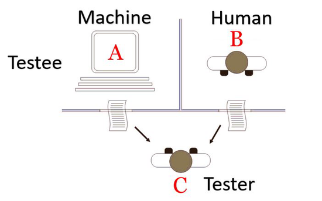
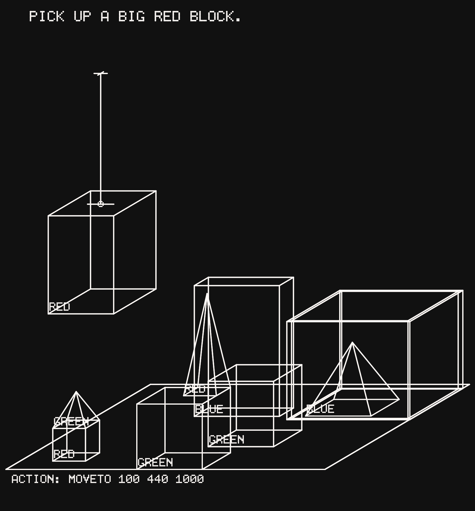

第二章 行为定义——图灵测试
2.1 行为定义的基本命题
自然语言理解最早的总体性定义，并不来自语言学内部，而来自对”机器是否能够表现得像人”的思考。图灵在 1950 年提出”模仿游戏”：如果一个系统在语言交流中足以让人无法可靠地区分它和人，那么可以把它视为具有智能 (Turing, 1950)。这种智能直接表现为理解人的语言，并且能给予合适的回复，其核心是语言理解能力。对于早期 AI 来说，这是一个极具吸引力的定义，因为它绕开了心智本体论争论，把理解还原为可观察的语言行为。

这一定义具有深远影响：它把一个几乎无法直接判定的标准暂时悬置起来，转而提出一种可以通过外部互动来判断的替代标准。图灵测试并没有回答系统内部是否像人一样理解，而是在承认这一点难以检验的前提下，先用可观察的语言行为作为理解证据。它的意义不在于已经给出完整答案，而在于首次明确地把”理解”转化为一种可由人类观察者判定的行为标准。
参考文献
Turing, Alan M. 1950. Computing machinery and intelligence. Mind, 59(236):433–460.
2.2 代表系统与实验
图灵测试本身是一个思想实验，但它所代表的行为定义在后续系统中迅速获得了具体形态。Weizenbaum 的 ELIZA 是一个模拟心理治疗师对话的程序，主要依赖模式匹配和改写规则，却能在局部情境中制造出”听懂了”的错觉，说明仅凭表面的语言行为就足以引发理解判断 (Weizenbaum, 1966)。稍后的 SHRDLU 则是 Winograd 在”积木世界”这一封闭环境中构建的自然语言理解系统，用户可以用自然语言询问、描述并指挥它移动积木；它把句法分析、语义解释、对话管理和动作执行结合起来，因此显示出一种比 ELIZA 更强的”封闭世界理解” (Winograd, 1971)。ELIZA 和 SHRDLU 作为代表，恰好构成一组对照：前者说明表层对话足以触发对理解的印象，后者说明一旦把语言与受限世界模型和行动能力连接起来，系统的”理解”判断就会显得更强，但也更依赖环境边界。
参考文献
Weizenbaum, Joseph. 1966. ELIZA — a computer program for the study of natural language communication between man and machine. Communications of the ACM, 9(1):36–45.
Winograd, Terry. 1971. Procedures as a Representation for Data in a Computer Program for Understanding Natural Language. Technical Report MAC-TR-84, MIT AI Lab, Cambridge, MA.
2.2.1 ELIZA：理解印象可以由表层行为触发
ELIZA 的核心是一套基于关键词匹配的规则体系，称为 DOCTOR 脚本。每条规则由三部分组成：关键词（keyword）及其优先级权重、分解规则（decomposition rule，描述如何拆解输入）、以及重组规则（reassembly rule，描述如何生成回应）。以下是处理情感表达的一组规则（改写自 Weizenbaum (1966) 原始 LISP 脚本格式）：
(FEEL 5
((* I FEEL *)
(WHAT DOES FEELING *4 MEAN TO YOU ?)
(DO YOU OFTEN FEEL *4 ?)
(DOES FEELING *4 BOTHER YOU ?)
(TELL ME MORE ABOUT SUCH FEELINGS .))
((* I AM FEELING *)
(HOW LONG HAVE YOU BEEN FEELING *4 ?)))格式说明：FEEL 是关键词，5
是优先级（数字越大越先处理）；*
是通配符，匹配任意词序列；*4 引用第四个匹配组（即
FEEL
之后的内容）；缩进的行是重组规则，系统依次轮转使用。
当用户输入 “I feel sad” 时，ELIZA 按以下步骤处理：
第一步：关键词扫描：系统遍历输入，查找规则库中的关键词。“feel” 命中（优先级 5），“I” 也是关键词但优先级仅为 1。
第二步：选择最高优先级：选中
FEEL（优先级 5）。
第三步：分解规则匹配：规则 (* I FEEL *)
匹配成功，捕获
*1 = ""（空），*2 = I，*3 = feel，*4 = "sad"。
第四步：轮转选取重组规则：第一次对话取第 1 条，将
*4 = "sad" 代入模板。
第五步：生成回应：输出 “What does feeling sad mean to you?”
若用户随后再说 “I feel alone”，轮转到第 2 条，输出 “Do you often feel alone?”。这种轮转制造出”记得上下文、换了话题”的假象，但系统完全不保存对话历史，只是避免重复同一句模板。
这一机制揭示了行为定义的核心裂缝：ELIZA 对”理解”毫无语义表征。它不知道”sad”意味着一种情绪状态，不知道回应是否真的适切，只是在执行”匹配模式，从池子里取下一条模板”的操作。语言形式层面的精巧，恰恰遮蔽了它在语义层面的完全空洞。感兴趣的读者可以访问 https://anthay.github.io/eliza.html 体验 ELIZA 的在线复现。
ELIZA 的重要性并不在于它真的完成了深层理解，而在于它揭示了一个事实：人类非常容易把连贯、贴合语境的语言表象误判为理解本身，这其实是行为定义的潜在缺陷。
2.2.2 SHRDLU：受限世界中的强理解

SHRDLU 由三个紧密耦合的模块构成：句法分析器（基于 ATN，把输入句子解析为句法树）、语义解释器（把句法结构映射为对积木世界的程序调用）、以及积木世界模型（用数据结构维护每个积木的颜色、形状、位置、支撑关系等状态）。理解在三者的联动中发生：语言不是被”翻译”，而是被直接编译成对世界的查询与操作。这正是它比 ELIZA 强的地方，也正是它的边界所在。
以下用 Python 展示其核心逻辑，重点说明”语言如何变成世界操作”：
# ── 积木世界的状态 ──────────────────────────────
world = {
'B1': {'color': 'RED', 'shape': 'BLOCK', 'size': 'LARGE',
'on': 'TABLE', 'clear': False}, # B2 压在上面
'B2': {'color': 'GREEN', 'shape': 'BLOCK', 'size': 'SMALL',
'on': 'B1', 'clear': True},
'B3': {'color': 'BLUE', 'shape': 'BLOCK', 'size': 'LARGE',
'on': 'TABLE', 'clear': True},
'P1': {'color': 'RED', 'shape': 'PYRAMID', 'size': 'SMALL',
'on': 'B3', 'clear': True},
}
holding = None
# ── 查询函数（对应语义解释层）──────────────────
def find(color=None, shape=None, size=None):
return [name for name, props in world.items()
if (color is None or props['color'] == color)
and (shape is None or props['shape'] == shape)
and (size is None or props['size'] == size)]
def what_is_on(block):
return [b for b, p in world.items() if p['on'] == block]
# ── 动作执行（对应规划层）──────────────────────
def put_down(block, destination):
global holding
world[block]['on'] = destination
if destination in world:
world[destination]['clear'] = False
holding = None
print(f" → 把 {block} 放到 {destination} 上")
def pick_up(block):
global holding
for b in what_is_on(block):
pick_up(b)
put_down(b, 'TABLE')
support = world[block]['on']
if support in world:
world[support]['clear'] = True
holding = block
print(f" → 抓起 {block}")
# ── 语言理解入口（对应句法 + 语义层）──────────
def understand(sentence):
tokens = sentence.lower().rstrip('.?').split()
if tokens[0] == 'pick' and tokens[1] == 'up':
color = next((t.upper() for t in tokens
if t in ['red','green','blue']), None)
size = next(({'big':'LARGE','small':'SMALL'}.get(t)
for t in tokens if t in ['big','small']), None)
shape = next(({'block':'BLOCK','pyramid':'PYRAMID'}.get(t)
for t in tokens if t in ['block','pyramid']), None)
candidates = find(color=color, shape=shape, size=size)
if candidates:
pick_up(candidates[0])
print("好的。")
else:
print("找不到符合条件的积木。")
elif tokens[:3] == ['what', 'is', 'on']:
target = next((b for b in world if b.lower() in tokens), None)
if target:
above = what_is_on(target)
print(f"{above[0]}。" if above else "什么都没有。")
elif 'is' in tokens and 'there' in tokens:
color = next((t.upper() for t in tokens
if t in ['red','green','blue']), None)
shape = next(({'block':'BLOCK','pyramid':'PYRAMID'}.get(t)
for t in tokens if t in ['block','pyramid']), None)
print("是的。" if find(color=color, shape=shape) else "没有。")运行三条指令的输出如下：
>>> understand("Pick up a big red block.")
→ B1 上有 B2，先移走
→ 抓起 B2
→ 把 B2 放到 TABLE 上
→ 抓起 B1
好的。
>>> understand("What is on B3?")
P1。
>>> understand("Is there a blue block?")
是的。感兴趣的读者可以访问 https://affinelayer.com/shrdlu/ 体验在线复现版本。从某种意义上说，SHRDLU 在积木世界里是成功的。它能够回答对状态的查询和判断、能够完成给定动作指令。与 ELIZA 不同的是：ELIZA 的回应是否”正确”无从验证。它总能找到某条模板作出看似理解的回应；而 SHRDLU 的每一次动作执行，都会立刻改变世界状态，且执行的结果与预期是一致的，如果出现错误可以被直接检验。从某种意义上说，SHRDLU 比 ELIZA 更接近”理解”。
但是，SHRDLU 的”理解”是受限的。它的理解能力只在积木世界的边界内有效，一旦超出，系统便不再具有理解能力，这跟理解语言这一目标显然有非常遥远的距离。 这说明：一旦语境、知识和世界边界都被人工限定，系统的优秀表现未必意味着真正的理解。
2.3 历史必要性
行为定义之所以会在 AI 早期占据重要位置，是因为它在当时几乎是唯一可能的总体性理解标准。图灵测试提出于1950年，ELIZA 和 SHRDLU 分别出现于1966年和1971年。彼时计算机价格极高、性能有限，既没有大规模电子化语料，也没有成熟的标注工具和自动评测手段；任何需要大规模数据或计算的研究路线都无从实施。研究者如果要讨论”系统是否理解”，最自然的办法就是回到人类直觉：看它是否能在对话中表现得像一个理解者。
2.4 技术进展
行为定义恰好与上述历史条件相适配：它对数据、训练和计算的要求极低。研究者只需构造一个对话场景，就能通过人工判断来讨论系统的表现；ELIZA 依靠模式匹配规则，在极有限的计算资源下就能制造出”听懂了”的对话效果；SHRDLU 通过手工编码的积木世界知识，用程序逻辑代替了对真实世界理解的需求。
2.5 技术支撑与局限
行为定义的技术支撑也恰恰决定了它的边界。脚本式对话、模式匹配、人工编写规则和受限语境，可以让系统在局部场景中显得聪明，却很难支持开放环境中的稳定理解。ELIZA 的成功更多来自用户自身的思维投射，而不是系统内部真正稳健的语义处理。Weizenbaum 本人在其后来的著作中对这一现象做出了系统性的反思和批评：用户倾向于把连贯的语言表象误判为理解，这被称为”ELIZA 效应” (Weizenbaum, 1976)。即便是 SHRDLU 这样更强的系统，其表现也高度依赖封闭世界与手工编码知识。一旦超出限定情境，行为模拟就会迅速失效。
哲学家约翰·塞尔[1]在 1980 年通过一个思想实验把这一讨论推向了极致。他设想一个完全不懂中文的英语使用者被锁在房间里，手持一本详尽的规则手册；房间外的人用中文提问并通过小窗递入，他查找手册找到对应规则，把规定的中文符号写下来递回：外面的人会认为他完全懂中文。但实际上他对每一个汉字的意义一无所知 (Searle, 1980)。
这个思想实验在逻辑上是精确的：它说明句法操作（按规则处理符号序列）在原则上可以与语义理解（真正把握符号所承载的意义）完全分离。无论规则写得多么完善、回答得多么流畅，“在行为上通过测试”并不保证”内部存在理解”。ELIZA 正是中文房间的一个现实版：它在完全不懂意义的情况下产生了形式上”正确”的输出。
中文房间论证的影响是双向的：它不只是对图灵测试的否定，更是对整个行为定义路线的哲学挑战：只要判据仍然停留在语言行为层面，就无法原则性地排除”无理解的行为模仿”。这推动后续研究不断寻找更强的外部证据。这一区分在大模型时代依然有效：即便系统输出极其流畅、有用，中文房间式的质疑仍然是合法的哲学追问。
行为定义的局限还在于，在当时基于行为定义的判别往往依赖于少数的实验者的感觉判断，而没有相对客观的标准。不同的实验者有可能产生不同的感觉，而可能参与的实验者往往较少，这使得行为定义的实际判定结果具有很大的不确定性。它很难提供一种可大规模比较、可积累改进、可对应社会需求的稳定研究对象。这呼唤着更进一步的对理解的思考和探索。
- 约翰·塞尔（John Searle，1932-2022）是美国著名哲学家，长期执教于加州大学伯克利分校，研究集中于语言哲学、心灵哲学和意识理论；这篇论文直接针对图灵测试所代表的行为主义判据，发表于《行为与脑科学》，是二十世纪最被广泛引用和讨论的哲学论文之一。 ↩
参考文献
Weizenbaum, Joseph. 1976. Computer Power and Human Reason: From Judgment to Calculation. W. H. Freeman, San Francisco.
Searle, John R. 1980. Minds, brains, and programs. Behavioral and Brain Sciences, 3(3):417–424.
2.6 本章思考题
参考讨论见附录”第二章思考题参考讨论”。
- 图灵测试真正可操作化的，究竟是”理解”，还是”可被误认为理解的行为”？
- ELIZA 几乎不具备深层语义能力，却仍能让人产生”被理解”的感觉；这种现象揭示了人类怎样的理解判断倾向？
- SHRDLU 的成功说明的到底是”系统已经理解了语言”，还是”在受限环境中，某种理解定义可以成立”？
- 如果把今天的大模型放进类似图灵测试的环境，它即便明显强于 ELIZA，是否就足以说明它更接近真正的理解？为什么？
- 行为定义的优点在于总体性，缺点在于主观性；那么在资源极为有限的历史条件下，这种主观性是否反而构成了一种必要代价？